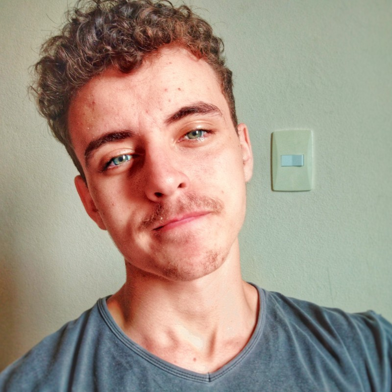

Deyvison Dênnis
Meu nome é Deyvison Dênnis, tenho 18 anos, moro em Divinópolis - Minas Gerais e você está no meu portfólio.
Assim como a tecnologia, minha jornada envolve mudanças e evolução. Nasci em um pequeno município e vivi parte
da minha vida em Abaeté, uma pequena cidade próxima de onde moro atualmente. Desde pequeno, sempre tive curiosidade
e interesse quando o assunto é tecnologia. Por ser curioso e interessado na área, o meu contato com computadores,
videogames, celulares e internet se deu de forma natural e gradativa, à medida que a tecnologia avançava e eu tivesse
a oportunidade de usufruir de tais avanços. Com esse contato, pude entender como as coisas funcionavam, podendo
auxiliar outras pessoas que tivessem problemas por não terem o conhecimento do funcionamento de alguma função
de seu aparelho eletrônico ou até mesmo de sua navegação pela internet.
Com o passar do tempo, aquela velha pergunta "o que você vai ser quando crescer?" necessita de uma projeção, um planejamento e de uma resposta. Foi quando me mudei de cidade, deixei amigos e parentes pensando no meu futuro e na minha carreira profissional, já que minha antiga cidade tinha poucas oportunidades de emprego e formação. Logo quando me mudei, comecei a fazer cursos na área de informática e participar de projetos de robótica na escola, até ser chamado para uma vaga de jovem aprendiz em uma grande empresa especializada no comércio atacadista de cereais que atende o estado de Minas Gerais. Uma experiência marcante, pois, além de ter sido o meu primeiro emprego também pude entender o fucionamento de uma empresa. Ainda atuando nesse estabelecimento, ingressei no curso "Técnico em informática para Internet" no CEFET de Divinópolis. Desde então, meu olhar e o meu contato com a tecnologia mudou. Se antes eu era somente um usuário que tinha acesso ao que era mostrado na tela, agora estou atrás das cortinas participando e atuando no desenvolvimento de sites e programas. Diferente de antes, agora meu entendimento é mais abrangente, onde consigo entender o por que das coisas estarem ali e como elas estão ali. O interesse em tecnologia não mudou, mas o auxílio às pessoas quanto a utilização das ferramentas tecnlógicas sim; mudou. Agora além de conseguir ajudar os outros a utlizarem as funcionalidades de seus aparelhos eletrônicos, também quero ser responsável na criação dessas funcionalidades que estão presentes em nosso dia a dia, facilitando nossas vidas.
Com o passar do tempo, aquela velha pergunta "o que você vai ser quando crescer?" necessita de uma projeção, um planejamento e de uma resposta. Foi quando me mudei de cidade, deixei amigos e parentes pensando no meu futuro e na minha carreira profissional, já que minha antiga cidade tinha poucas oportunidades de emprego e formação. Logo quando me mudei, comecei a fazer cursos na área de informática e participar de projetos de robótica na escola, até ser chamado para uma vaga de jovem aprendiz em uma grande empresa especializada no comércio atacadista de cereais que atende o estado de Minas Gerais. Uma experiência marcante, pois, além de ter sido o meu primeiro emprego também pude entender o fucionamento de uma empresa. Ainda atuando nesse estabelecimento, ingressei no curso "Técnico em informática para Internet" no CEFET de Divinópolis. Desde então, meu olhar e o meu contato com a tecnologia mudou. Se antes eu era somente um usuário que tinha acesso ao que era mostrado na tela, agora estou atrás das cortinas participando e atuando no desenvolvimento de sites e programas. Diferente de antes, agora meu entendimento é mais abrangente, onde consigo entender o por que das coisas estarem ali e como elas estão ali. O interesse em tecnologia não mudou, mas o auxílio às pessoas quanto a utilização das ferramentas tecnlógicas sim; mudou. Agora além de conseguir ajudar os outros a utlizarem as funcionalidades de seus aparelhos eletrônicos, também quero ser responsável na criação dessas funcionalidades que estão presentes em nosso dia a dia, facilitando nossas vidas.
Contato